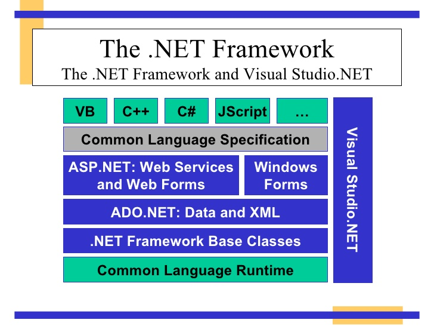
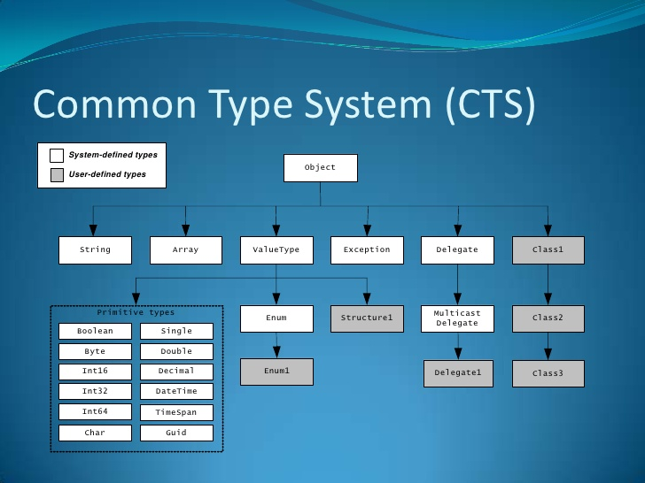
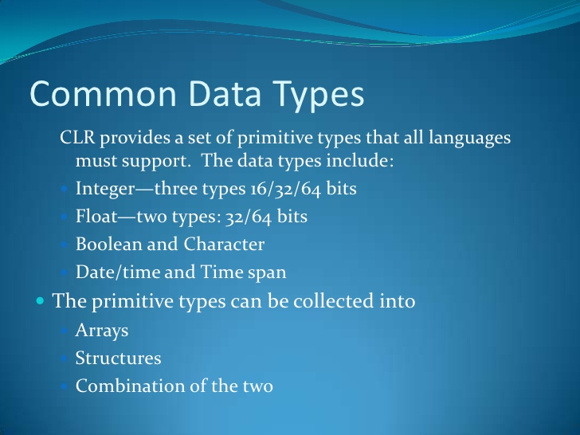
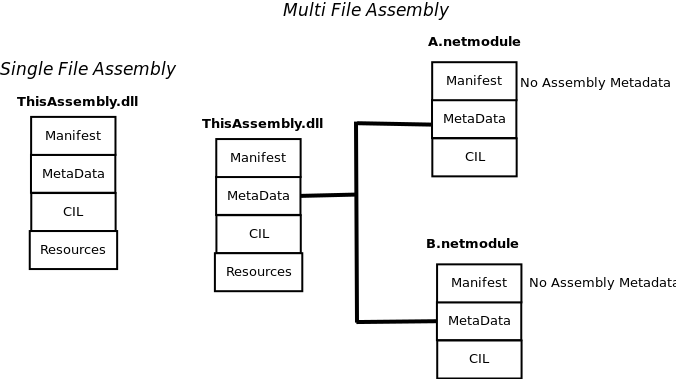
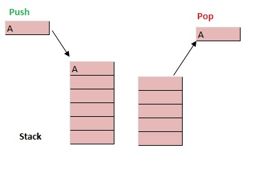
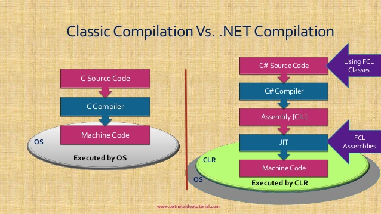

Created: 2018-12-11 Tue 11:36




.assembly Hello {}
.method public static void Main() cil managed
{
.entrypoint
.maxstack 1
ldstr "Hello, world!"
call void [mscorlib]System.Console::WriteLine(string)
ret
}
assembly bytecode purpose
ldarga argNum FE 0A fetch the adress given as argument
brtrue 2D branch when the previous result is true
break 01 exit a loop

static void add()
{
int value1 = 10;
int value2 = 20;
int value3 = value1 + value2;
}
0.method private hidebysig static void 'add'() cil managed
{
// Code size 12 (0xc)
.maxstack 2
.locals init ([0] int32 value1,
[1] int32 value2,
[2] int32 value3) // three int32 local variables are declared
IL_0000: nop // no operation ( no push or pop on the stack)
IL_0001: ldc.i4.s 10 //loads the int32 value(10) on the stack. Item on Stack=1
IL_0003: stloc.0 // pops off the item from the stack and stores in first local variable.
//Item on Stack=0
IL_0004: ldc.i4.s 20 //loads the int32 value(20) on the stack.Item on the stack =1
IL_0006: stloc.1 0 // pops off the item from the stack and stores in second local variable .
//Item on Stack=0
IL_0007: ldloc.0// Loads the value of first local variable on the stack. Item on Stack=1
IL_0008: ldloc.1// Loads the value of second local variable on the stack. Item on Stack=2
IL_0009: add //(Pops off first two numeric value from the stack and sends the result
// back to the stack) //Item on stack=2-2+1=1
IL_000a: stloc.2 //(Pop off the item from the stack and store it in local variable [3].
//Item on the Stack=0
IL_000b: ret
} // end of method Program::'add'
